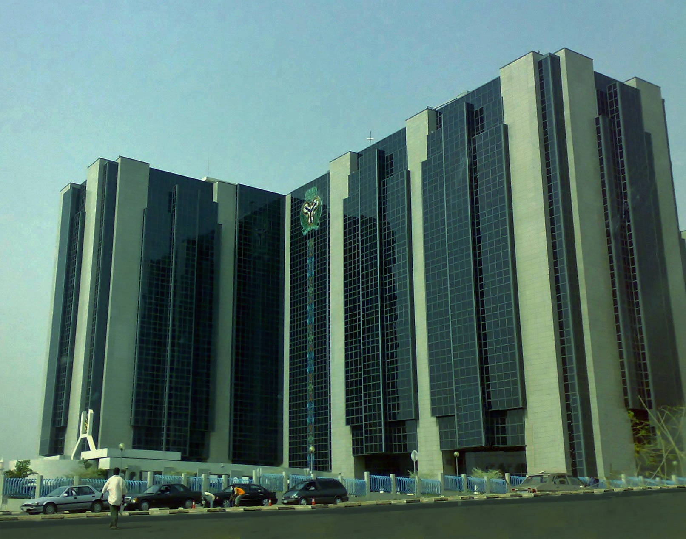
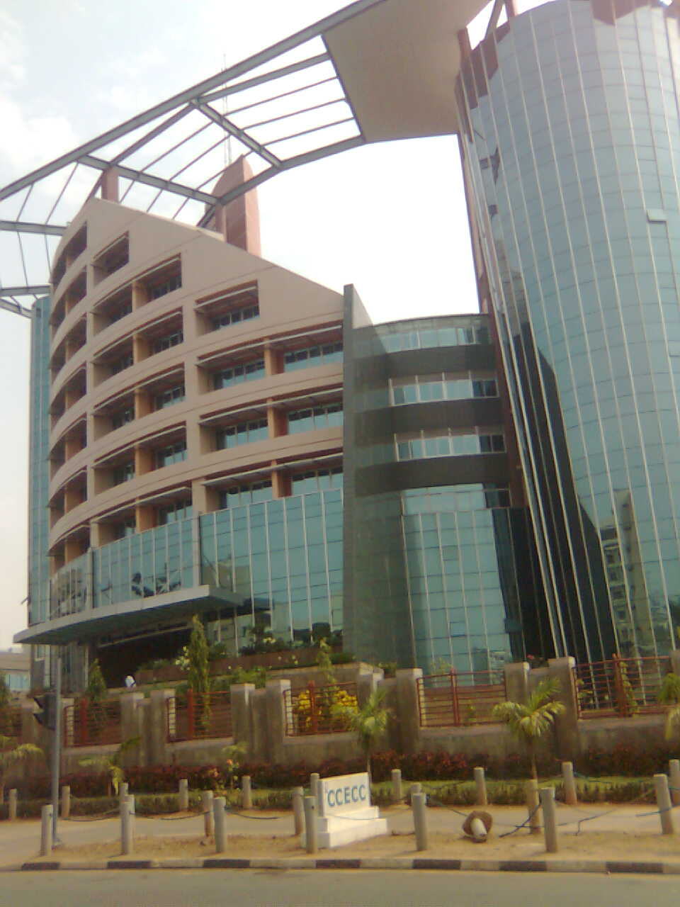
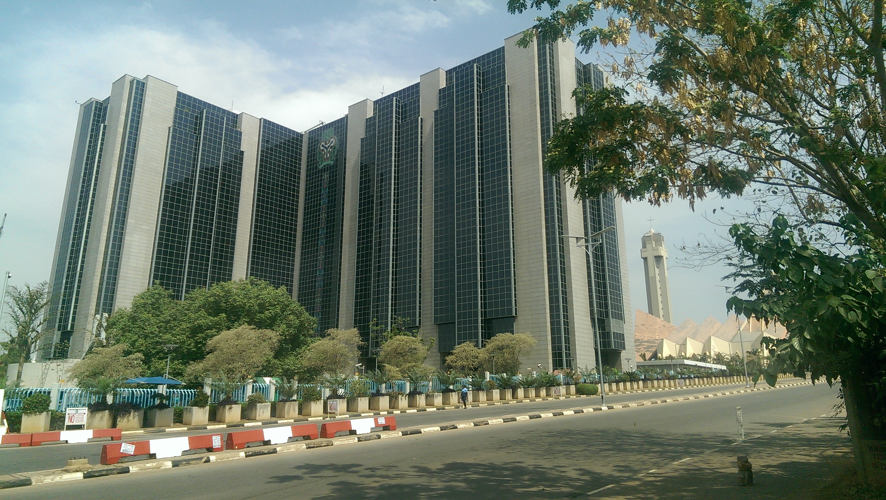

Federal Asset Record
—
—
Front Facade
Address
—
State / LGA
—
Asset Purpose
—
Nearest Landmark
—
The Department of Federal Public Assets Management is responsible for overseeing, maintaining, and protecting all federal government buildings and facilities across Nigeria's 36 states and the FCT — a living record of national infrastructure.
Ensuring every federal asset is functional, safe, and accessible for Nigerians.
Our MissionThe Department of Federal Public Assets Management (FPAM) operates under the Federal Ministry of Housing and Urban Development. It serves as the custodial authority for all federal government properties — ensuring they are well-maintained, properly documented, and efficiently managed on behalf of the Nigerian people.
The Department exercises oversight across six key operational pillars, ensuring the federal government's physical infrastructure is managed with efficiency, transparency, and national purpose.
A searchable, filterable record of federal government buildings and facilities across all states — drawn from the official inventory database.
| S/N | Ministry / Agency (MDA) | Purpose | State | Local Govt | Address / Location | Landmark | Year | Details |
|---|
A breakdown of the number of facilities under each federal ministry and agency, reflecting the scope and reach of the federal government's physical infrastructure.
Actual photographs of federal government buildings and parastatals under FPAM inventory — Central Bank of Nigeria, National Assembly Complex, and NCC Headquarters, Abuja.



Every federal building in the FPAM register is graded annually against a five-tier condition framework. Field engineers carry out structural, mechanical, and safety evaluations — generating a live picture of the physical state of Nigeria's federal estate and informing maintenance budget allocation.
Each of Nigeria's 2,764+ registered federal assets receives an annual condition grade determined by FPAM-certified engineers. Grades drive maintenance budget prioritisation — Grade D and E assets trigger emergency procurement, while Grade A and B assets enter routine servicing cycles.
FPAM operates a structured four-quarter inspection cycle across all 37 states and FCT. Each phase involves different teams, tools, and outcomes — together ensuring no federal asset goes uninspected for more than twelve months.
FPAM is the primary source of physical verification data for Nigeria's national balance sheet — ensuring that federal assets are accurately valued, properly recorded, and reported in accordance with the International Public Sector Accounting Standards (IPSAS) framework adopted by the Office of the Accountant-General of the Federation.
Nigeria's 2,764+ registered federal buildings represent one of the country's most significant off-balance-sheet resources. Accurate valuation, proper documentation, and active management of this estate — the core mission of FPAM — is not merely an administrative exercise. It is a direct contribution to the integrity of Nigeria's public finances, the attractiveness of the country to investors, and the accountability owed to every Nigerian taxpayer.